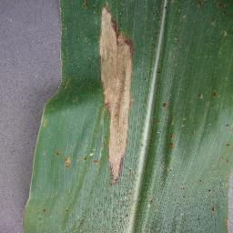
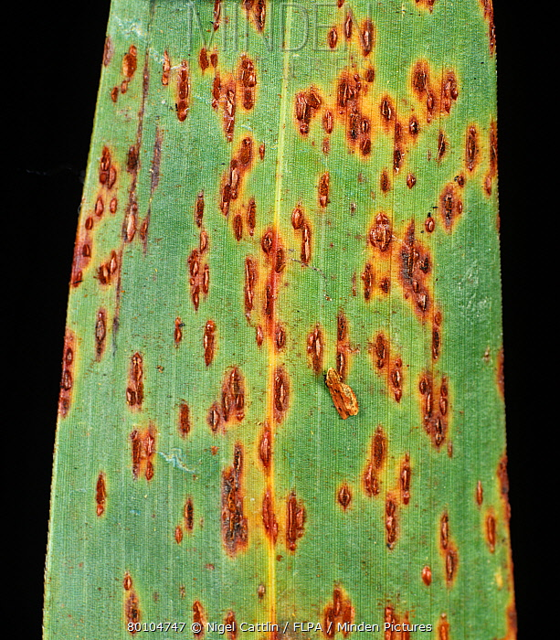
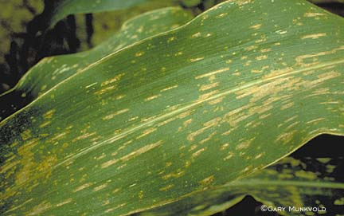
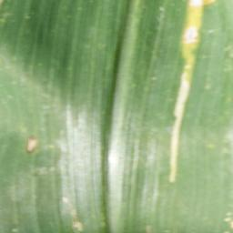

Hawar Daun (Blight)
Exserohilum turcicum

Gejala hawar daun (Blight) pada tanaman jagung
Deskripsi
Hawar daun atau Northern Corn Leaf Blight (NCLB) merupakan salah satu penyakit utama pada jagung. Penyakit ini disebabkan oleh jamur Exserohilum turcicum (syn. Helminthosporium turcicum). Gejala awal berupa bercak kecil berbentuk oval yang kemudian memanjang seperti cerutu berwarna coklat keabu-abuan dengan panjang 2,5–15 cm.
Gejala
- Lesi berbentuk cerutu (elips memanjang) berwarna abu-abu kehijauan atau coklat.
- Lesi biasanya muncul pertama kali pada daun bagian bawah.
- Pada serangan berat, daun mengering dan mati seluruhnya.
- Bercak dapat menyatu sehingga menutupi seluruh permukaan daun.
Rekomendasi Penanganan
- Gunakan varietas jagung yang tahan terhadap hawar daun.
- Lakukan pergiliran tanaman (rotasi) dengan tanaman non-graminae.
- Bersihkan sisa-sisa tanaman yang terinfeksi setelah panen.
- Semprotkan fungisida berbahan aktif mankozeb atau benomil sesuai dosis jika serangan meluas.
- Pastikan jarak tanam tidak terlalu rapat untuk mengurangi kelembapan.
Karat Daun (Common Rust)
Puccinia sorghi

Gejala karat daun (Common Rust) pada tanaman jagung
Deskripsi
Common Rust atau karat daun jagung disebabkan oleh jamur Puccinia sorghi. Penyakit ini tersebar luas di daerah tropis dan subtropis dengan kondisi kelembapan tinggi dan suhu sedang (15–25°C). Terlihat sebagai bintik-bintik pustula berwarna oranye-coklat kemerahan pada kedua sisi permukaan daun.
Gejala
- Pustula kecil berwarna oranye-coklat tersebar di kedua sisi daun.
- Pustula berbentuk oval atau memanjang, berukuran 1–3 mm.
- Pada serangan lanjut, pustula berubah menjadi coklat tua hingga kehitaman.
- Daun yang terinfeksi berat menguning dan mengering.
Rekomendasi Penanganan
- Pilih waktu tanam yang tepat untuk menghindari puncak kelembapan tinggi.
- Atur jarak tanam agar sirkulasi udara di area pertanaman lancar.
- Aplikasi fungisida sistemik berbahan aktif triazol jika intensitas serangan tinggi.
- Pastikan sistem drainase lahan berjalan dengan baik.
- Gunakan varietas tahan karat jika tersedia di daerah Anda.
Bercak Daun Abu-abu (Gray Leaf Spot)
Cercospora zeae-maydis

Gejala bercak daun abu-abu (Gray Leaf Spot) pada tanaman jagung
Deskripsi
Gray Leaf Spot (GLS) disebabkan oleh jamur Cercospora zeae-maydis. Penyakit ini menjadi masalah serius di berbagai wilayah penghasil jagung dunia. Bercak berbentuk persegi panjang yang memanjang mengikuti alur tulang daun merupakan ciri khas penyakit ini.
Gejala
- Bercak berbentuk persegi panjang (rectangular) dengan tepi lurus mengikuti tulang daun.
- Warna bercak abu-abu kecoklatan hingga coklat muda.
- Biasanya muncul terlebih dahulu pada daun bagian bawah.
- Pada serangan berat, bercak menyatu dan daun mengering seluruhnya.
Rekomendasi Penanganan
- Lakukan pengolahan tanah yang sempurna untuk memendam sisa tanaman sakit.
- Kurangi kelembapan lingkungan pertanaman.
- Gunakan fungisida pelindung sebelum infeksi meluas ke daun di atas tongkol.
- Pilih benih yang memiliki ketahanan genetik terhadap GLS.
- Hindari pola monokultur jagung secara terus-menerus di lahan yang sama.
Tanaman Sehat (Healthy)
Tidak ada patogen terdeteksi

Contoh daun jagung dalam kondisi sehat (Healthy)
Deskripsi
Daun jagung yang terdeteksi dalam kategori "Healthy" menunjukkan bahwa tidak ada tanda-tanda infeksi penyakit yang teridentifikasi oleh sistem. Daun dalam kondisi prima dengan warna hijau merata dan struktur permukaan daun yang normal.
Ciri-ciri Daun Sehat
- Warna daun hijau cerah dan merata tanpa bercak atau perubahan warna.
- Permukaan daun bersih dari pustula atau lesi.
- Tulang daun terlihat jelas dengan pola yang teratur.
- Daun tegak dan tidak layu atau menguning.
Tips Menjaga Kesehatan Tanaman
- Pertahankan nutrisi tanaman dengan pemupukan berimbang (N-P-K).
- Lakukan pemantauan rutin untuk deteksi dini hama dan penyakit.
- Pastikan ketersediaan air cukup terutama pada fase generatif.
- Lakukan penyiangan gulma secara berkala.